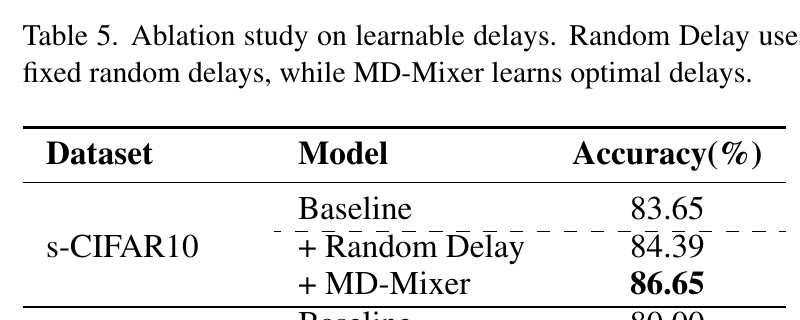
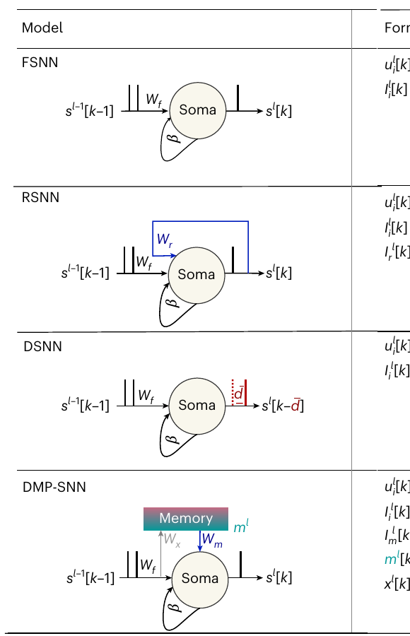
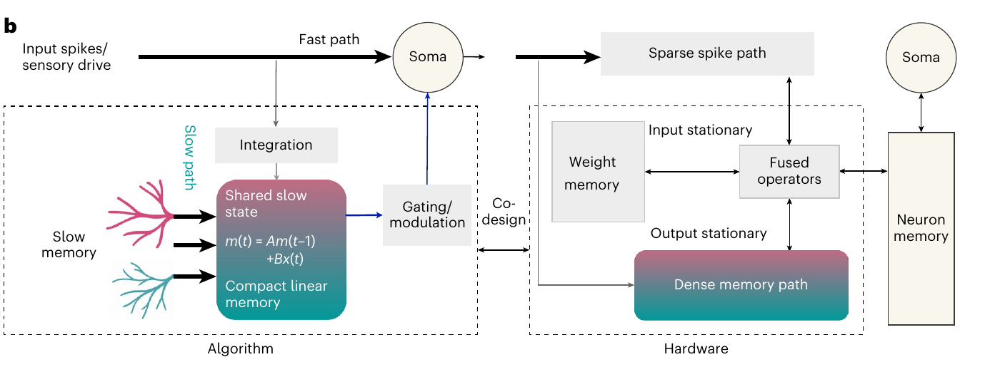
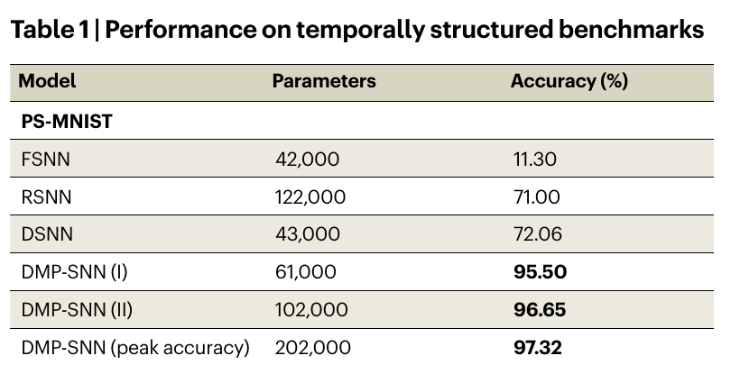
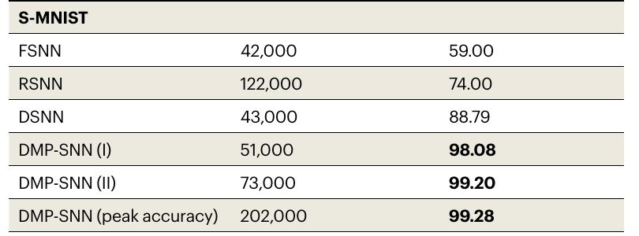
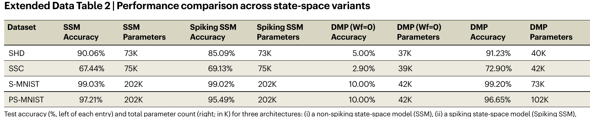
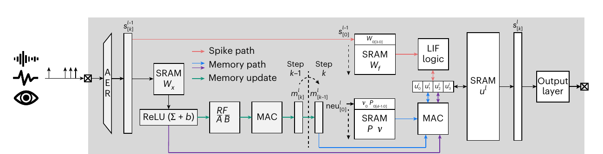
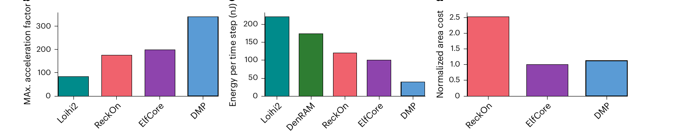

τ giảm làm phân bố chọn delay hẹp dần. Delay dj(k) không bắt buộc giảm; sau train, các nhánh vẫn được cộng để tạo feature cho K/V.
Sơ đồ tạo bằng AI theo Shi et al., CVPR 2026, Figures 2–4, Equations 7, 12, 14; không phải hình gốc. Paper chính không cho công thức lịch τ cụ thể.
09 / 20
MD-Mixer · Kết quả thực nghiệm
Delay học được cải thiện hơn delay ngẫu nhiên

Table 5, s-CIFAR10 / SDT-V1: cùng bài toán, khác cách chọn delay
Kiểm tra trên bài toán khác
Dataset / backbone
Baseline
MD-Mixer
ImageNet / SDT-V2 8-512
79.49%
80.02%
s-CIFAR100 / QKFormer
55.99%
64.33%
Hai hàng này có protocol khác nhau, nên chỉ so baseline với MD-Mixer trong cùng hàng.
Bằng chứng cho thấy lợi ích của delay được học. Paper chưa đo đầy đủ buffer, latency và energy khi triển khai thực tế.
Hình: Shi et al., CVPR 2026, Table 5; số liệu bổ sung: Tables 1 và 4.
10 / 20
DMP-SNN · Vấn đề
Các cách giữ lịch sử đều có đánh đổi

Hình 1a của DMP-SNN: bốn kiến trúc đặt bộ nhớ ở các vị trí khác nhau
Đọc ba hàng đầu của hình
FSNN: đường thẳng qua neuron, điện thế LIF là bộ nhớ chính.
RSNN: thêm vòng hồi tiếp giữa neuron, cần thêm nhiều kết nối.
DSNN: trì hoãn spike; delay dài cần buffer sâu.
Trong S-MNIST, pixel được đưa vào lần lượt qua 784 bước, nên tín hiệu đầu chuỗi phải còn hữu ích ở cuối.
Hàng DMP-SNN ở cuối hình thêm memory nhỏ dùng chung mà vẫn giữ đường spike trực tiếp.
Hình: Sun et al., Nature Machine Intelligence 2026, Figure 1a; ví dụ S-MNIST trong Results.
11 / 20
DMP-SNN · Hướng giải quyết
Fast path và slow path chạy song song

Hình 1b: nửa trái mô tả thuật toán; nửa phải mô tả phần cứng tương ứng
Đọc nửa trái: spike hiện tại đi thẳng đến soma theo fast path. Một nhánh khác cập nhật shared slow state và gửi ngữ cảnh trở lại soma. Nửa phải cho thấy hai loại dữ liệu được xử lý riêng trên phần cứng.
Memory đóng vai trò điều biến phản ứng nhanh, không thay thế đường spike trực tiếp.
Hình: Sun et al., Nature Machine Intelligence 2026, Figure 1b.
12 / 20
DMP-SNN · Pipeline chi tiết
Một timestep có hai nhánh song song rồi hội tụ ở neuron
1. Cùng nhận spike st từ layer trước
2. Fast pathWfst tạo dòng Ifast từ spike hiện tại.
3–5. Slow pathNén st thành scalar xt, cập nhật mt = Āmt−1 + B̄xt, rồi chiếu Wmmt thành Imemory.
Hai nhánh hội tụ
6. Tích hợpIfast + Imemory cùng cập nhật điện thế màng
→
7. Phát spikeNeuron vượt ngưỡng gửi spike sang layer tiếp theo
Fast path không chờ memory path xử lý xong mới nhận st. Hai kết quả được cộng khi neuron cập nhật.
State m chỉ có d chiều nhỏ hơn số neuron N. Nó nén ngữ cảnh của layer và chiếu trở lại N neuron khi cần.
Sun et al., Nature Machine Intelligence 2026, Figure 1 và Methods. Các biểu thức được giản lược để trình bày.
13 / 20
DMP-SNN · Ví dụ trực giác
Slow state giữ dấu vết cũ, fast path đọc sự kiện mới
t=1 spike At=2t=3t=4t=5t=6t=7t=8 spike B
Fast path tại t=8Nhìn trực tiếp spike B, tạo phản ứng tức thời.
Slow state tại t=8Đã cập nhật qua nhiều timestep nên còn tóm tắt ngữ cảnh liên quan đến A.
Khi cộng hai dòng
Neuron ở t=8 có thể phản ứng khác nhau với cùng spike B, tùy ngữ cảnh A trước đó.
Ví dụ A/B minh họa cơ chế, không phải thí nghiệm cụ thể trong paper. State nén không bảo đảm giữ nguyên mọi chi tiết cũ.
DMP không lưu từng spike quá khứ. Nó lưu một bản tóm tắt động, đổi thông tin chi tiết lấy bộ nhớ gọn hơn.
14 / 20
DMP-SNN · Kết quả thuật toán
Table 1 cho thấy lợi ích trên hai chuỗi 784 bước

PS-MNIST: DMP-SNN II 96.65%, DSNN 72.06%

S-MNIST: DMP-SNN II 99.20%, DSNN 88.79%
Hai bảng là ảnh cắt từ Table 1 gốc. Hãy đọc cả cột Parameters: DMP-SNN II dùng nhiều tham số hơn DSNN, nên đây không phải so sánh cùng ngân sách.
Hình: Sun et al., Nature Machine Intelligence 2026, Table 1.
15 / 20
DMP-SNN · Kiểm tra cơ chế
Bỏ fast path thì slow state không đủ để dự đoán

Extended Data Table 2: so hai cột DMP (Wf=0) và DMP ở các hàng S-MNIST, PS-MNIST
S-MNIST: 10.00% khi bỏ fast path, 99.20% với DMP đầy đủ. PS-MNIST: 10.00% so với 96.65%. Mức 10% tương đương đoán ngẫu nhiên trong bài toán 10 lớp.
Slow state cung cấp ngữ cảnh cho fast path; tự nó không thay thế được luồng spike trực tiếp.
Hình: Sun et al., Nature Machine Intelligence 2026, Extended Data Table 2.
16 / 20
DMP-SNN · Đồng thiết kế phần cứng
Phần cứng giữ riêng đường spike thưa và memory dense

Hình 4a: đỏ là spike path, xanh dương/tím là memory path, xanh lá là memory update

Hình 4b–d: throughput cao hơn, năng lượng mỗi timestep thấp hơn trong setup của paper
Paper báo >4× throughput và >5× energy efficiency theo so sánh đã chuẩn hóa. Đây là post-layout simulation 22FDX, chưa phải đo chip DMP thật.
Hình: Sun et al., Nature Machine Intelligence 2026, Figure 4a–d; inference single-core trên SHD.
17 / 20
Đối chiếu hai paper
Hai phương pháp đặt bộ nhớ ở hai vị trí khác nhau
Câu hỏi
MD-Mixer
DMP-SNN
Lịch sử được giữ ở đâu?
Feature trong buffer tại các delay đã học
Vector slow state nén lịch sử của layer
Đưa lịch sử vào đâu?
K và V trước spiking attention
Dòng điện bổ sung vào neuron
Điểm mạnh đã đo
Accuracy trên nhiều Spiking Transformer; learned delay vượt random delay
Chuỗi dài, ablation fast path và đánh giá phần cứng
Chi phí còn cần đo
Buffer, latency, năng lượng streaming
Scale multi-core và phép đo trên chip thực
Không thể lấy accuracy của hai paper để xếp hạng trực tiếp: dataset, backbone, điểm can thiệp và protocol khác nhau.
Tổng hợp từ Shi et al., CVPR 2026 và Sun et al., Nature Machine Intelligence 2026.
18 / 20
Kết luận
SNN cần dùng lịch sử đúng chỗ và đúng chi phí
MD-Mixer cho attention truy cập trực tiếp nhiều thời điểm cũ. DMP-SNN mang ngữ cảnh dài vào neuron qua một state nhỏ.
Cả hai đều cải thiện kết quả trong các bài toán đã thử, nhưng chi phí hệ thống và khả năng mở rộng vẫn cần đánh giá theo từng ứng dụng.
Thông điệp chính: “SNN có thời gian” chưa đủ. Cách tổ chức và truy cập thông tin thời gian quyết định mô hình sử dụng lịch sử hiệu quả ra sao.